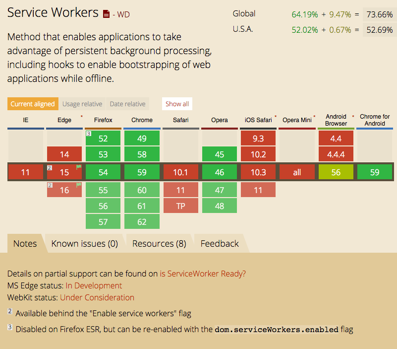

Going Offline
Grand Rapids JavaScript Meetup
24 July 2017
Karl Swedberg
- Offline Status
- Application Cache
- Progessive Web Apps (Service Workers)
- Client-side, Syncing Databases
Show Offline Status
Add an "alert" div:
And, add a function to change its state:
Show Offline Status: Alert & Forms
Offline Form
Application Cache
Yes, yes, we all know it's "a douchebag" and the W3C has deprecated it.
But if your browser doesn't support Service Workers (*cough* Safari *cough*), it's better than nothing.

PWAs: Progressive Web Apps
- Need Service Worker (Performance improvement, offline capability)
- Need manifest.json (Android homescreen availability, etc.)
- Need https (Security)
- Don't need to be apps
See Google Web App Checklist
PWAs: Service Workers
Intercept network requests to do different things based on network connection, cached status of assets, your preferences.
Some possibilities:
- Show a custom offline page if the network is down
- Get resources from the network first, and fall back to a cached version if network is down
- Get resources from cache first, and fall back to network if cached copy unavailable or stale
- Enable background sync (maybe?) and even periodic background sync (some day?)
- Provide push notifications
Registering a Service Worker — Minimal
Registering a Service Worker — Robust
Service Worker: Offline Page Fallback
Regarding waitUntil():
In service workers, extending the life of an event prevents the browser from terminating the service worker before asynchronous operations within the event have completed.
Service Worker: Offline Page Fallback
example
Complete code:
Service Worker: Cache-first
Service Worker: A Few Tips
- Don't browser-cache the service-worker.js file. (Set 0s expires header in Apache/nginx config)
- The registering file can go anywhere — either on its own or bundled with the rest of your scripts
- The service worker file will only cache files in its directory or child directories of it (so, good idea to put it in doc root)
-
Consider different cache strategies based on file type:
Service Worker: Clean Up
- Browser can delete files cached by ServiceWorker whenever it feels like it's getting too fat.
- Browsers typically take all-or-nothing approach to clean up.
- Probably good idea to have way to clean up caches on your own, especially if you're versioning them. Maybe something like this:
Service Worker: Advanced Caching
Use workbox.js:
Service Worker: workbox.js Generated Config
Workbox.js produces this sw-workbox.js file:
Service Worker: Background Sync
- sync event is triggered when device goes online
- Don't need to keep persisent HTTP connection open
- Because in SW, can fire even if the website isn't open
Background Sync Resources
My Experience
- Slow: Has taken 5 minutes or more for sync to fire after going back online
- Unreliable: Sometimes doesn't seem to work at all
- Browser support still poor: Only Chrome currently supports it
Databases
…Versus SW background sync (ideally)
- Service Worker better because sync event can be triggered without website open
- ServiceWorker more efficient: no long polling / multiple http connections open
- Client-side db seems to react faster to online state change
Example:
Image Gallery
Databases: PouchDB / CouchDB
PouchDB was created to help web developers build applications that work as well offline as they do online.
It enables applications to store data locally while offline, then synchronize it with CouchDB and compatible servers when the application is back online, keeping the user's data in sync no matter where they next login.
Databases: GUN
GUN on GitHub
GUN works even if your internet or cell reception doesn't. Users can still plug away and save data as normal, and then when the network comes back online GUN will automatically synchronize all the changes and handle any conflicts for you.
Offline-first Framework: Hoodie
hood.ie
- Uses PouchDB / CouchDB
- Super intuitive API for main features
- I want to love it, but …
- Documentation leaves much to be desired
- Not clear where project is headed
- Many plugins appear abandoned
Further Resources
Info
Tools
- Workbox: A set of modular JavaScript libraries
- Lighthouse: Chrome extension/CLI tool/Node module for running web page audits (including PWA checks). Also, available in Chrome Canary's Developer Tools Audit tab.
My Examples